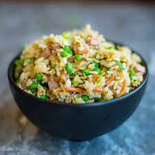

Fried Rice
back to homepage

Description
In this simple dish, we'll begin by scrambling some eggs before throwing them into the wok
with some cooking oil. We'll then add spam, peas, and beans to the wok over time to get some
simple but delicious fried rice!
Ingredients
- rice
- eggs
- spam
- beans
- cooking oil
- salt
Steps
- Cut spam into small pieces
- Crack eggs in bowl and stir till liquified
- Add cooking oil to pot till it becomes steamy
- Add eggs
- While eggs are half way cooked, add peas and then add spam shortly after
- Add rice and stir. Ready to serve!